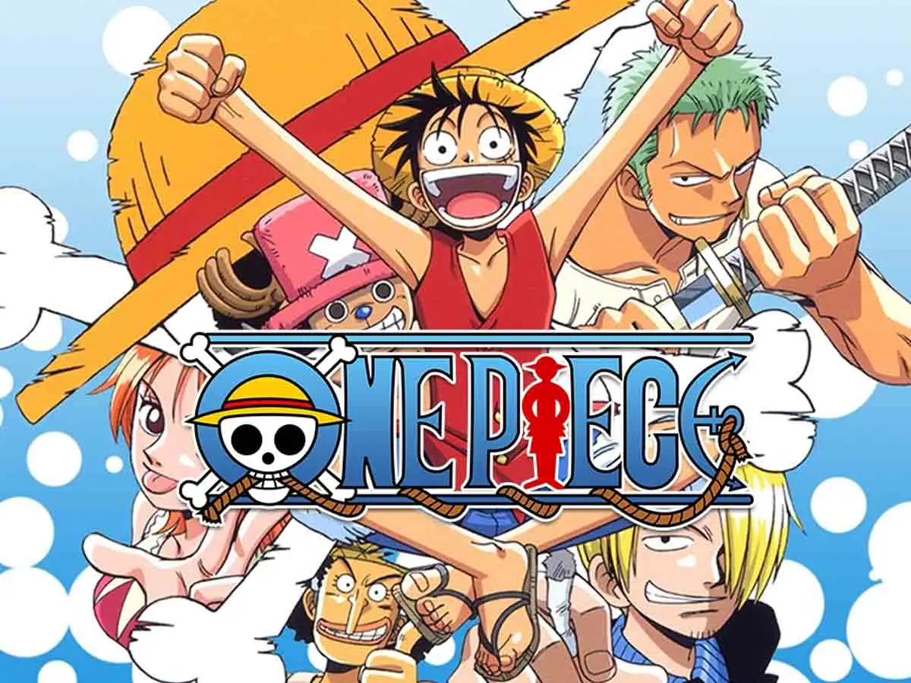
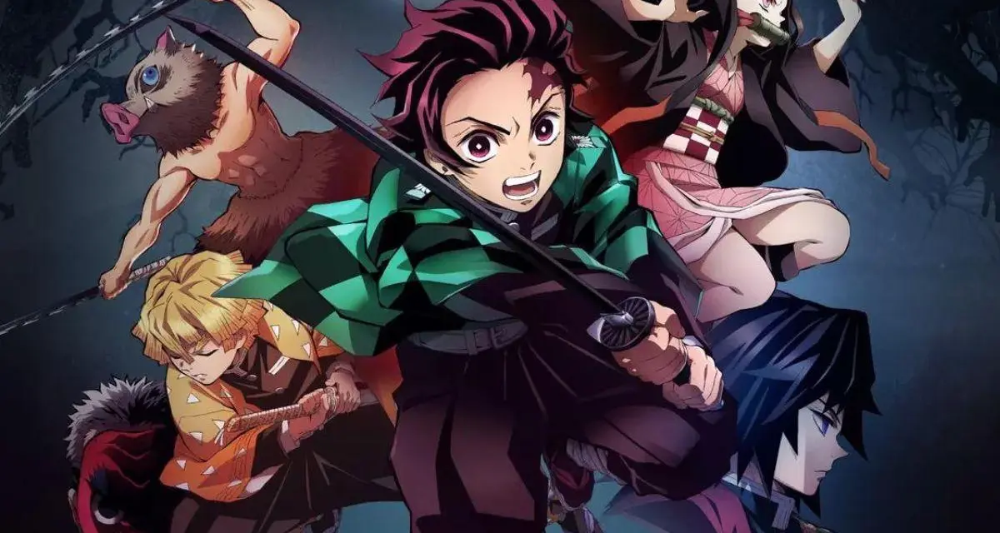

Animes e Mangás
Os mangás (quadrinhos japoneses) e animes (animações japonesas) são duas das expressões culturais mais populares do Japão, com uma história rica e uma influência que se estende pelo mundo todo. Os mangás surgiram no período Edo (século XIX), mas se consolidaram no pós-guerra, com obras como Astro Boy (1963), de Osamu Tezuka, considerado o "pai dos mangás modernos". Já os animes ganharam destaque a partir dos anos 1960 e 1970, com séries como Mobile Suit Gundam e Dragon Ball, tornando-se um fenômeno global nas décadas seguintes. Hoje, títulos como One Piece, Attack on Titan e Demon Slayer dominam as paradas internacionais, atraindo milhões de fãs.
Confira alguns dos Animes:

|
Dragon Ball Z é a sequência do anime Dragon Ball e acompanha as aventuras de Goku, agora adulto, e seus amigos enquanto enfrentam inimigos cada vez mais poderosos que ameaçam a Terra e o universo. | Assista |
|  | Luffy ganha poderes de borracha após comer a Fruta do Diabo Gomu Gomu, tornando-se um "homem-borracha". Ele forma os Piratas do Chapéu de Palha e parte em busca do lendário tesouro One Piece, deixado pelo antigo Rei dos Piratas, Gol D. Roger. | Assista |
|  | Demon Slayer é um anime de ação e fantasia sombria que acompanha a jornada de Tanjiro Kamado, um jovem bondoso que se torna um caçador de demônios após sua família ser massacrada por criaturas malignas, e sua irmã Nezuko ser transformada em uma delas. | Assista |